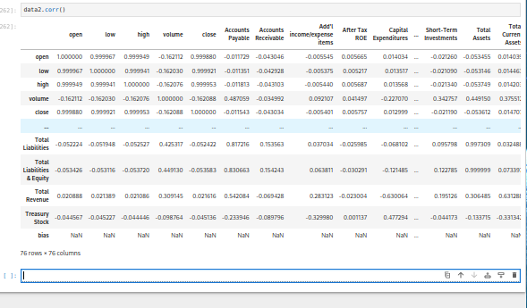
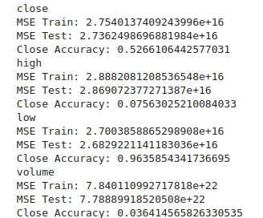
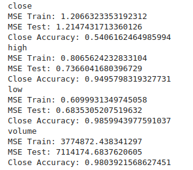

The goal of this project is to develop a regression model to predict stock prices.
https://www.kaggle.com/datasets/dgawlik/nyse
Jupyter Notebook (Code): https://github.com/kinglouisph/datamining3
The data used for this project is a database of prices of over 500 stocks across six years
The features of this database I am using are too numerous to mention (around 80 of them), but the most important are the open, high, low, and close
The goal is to predict the close, though I am also trying to predict the high, low, and volume.
Regression is the prediction of a continuous value with continuous input variables. The input variables are assummed to be independent. The simplest type of regression is linear regression, which is just a weighted sum of the regressors (inputs). A training dataset is used to initialize the weights, and a testing dataset is used to make sure the model works.
There were some correlations I hypothesized, namely that open would be very strongly correlated to close. After training and preprecessing I found that there was a very strong correlation and the model found it.
The data came in two parts: stock prices daily and periodic reports. I figured that the reports data would be more accurate on the days reports were released, along with those days having higher swings in the prices, making them more useful. I setup the database to be the report data plus the open, close, etc on those days. This simple thing took many hours to pre-process becuase python is python. I also removed the columns with nulls.
My first model was a simple polynomial regression. I used degree 2, and tried both unregularized and bayesian ridge regression. The unregularized verision did very well, but only on the training set. It has an MSE of ~0.35 on the training set and ~1414848385 on the test set. Unusable.
Note: close accuracy is whether the prediction's difference to the open is positive/negative compared to whether the test's difference to the open is positive/negative. It's only meaningful on the close.

The regularized version somehow did worse on both datasets, with an MSE of ~2.7e+16 for both. Absolute garbage.
The second model I tried was just simple linear regression. It did well enough, ~1.2 MSE for test and train. Looking at the coeficients, the weight for the open was about ~.97, which is about what I expected.
For my last model, I tried using a neural network with TensorFlow. I tried complex and simple models, increasing training time, decreasing/increasing learning rate, but it kept underfitting. The final train MSE was ~6000 and test mse ~7000. Close accuracy ~.53. The mean absolute error always got stuck around 35 when training, even when I lowered the learning rate or incrased complexity. Very strange.
The impact of these models is that you will lose money if you try them. You might make a little, or it'll be flat, but you're better off just buying an index fund.
The simple linear model performed the best by far, although I can't say it was very successful. It only detected increases/decreases correctly at ~55% accuracy. I am very surprised that of all the models, simple linear regression underfit the least. I suppose the correlation with the open was so strong that the linear model just used it while the neural network just overcomplicated everything and was messed up by noisy inputs